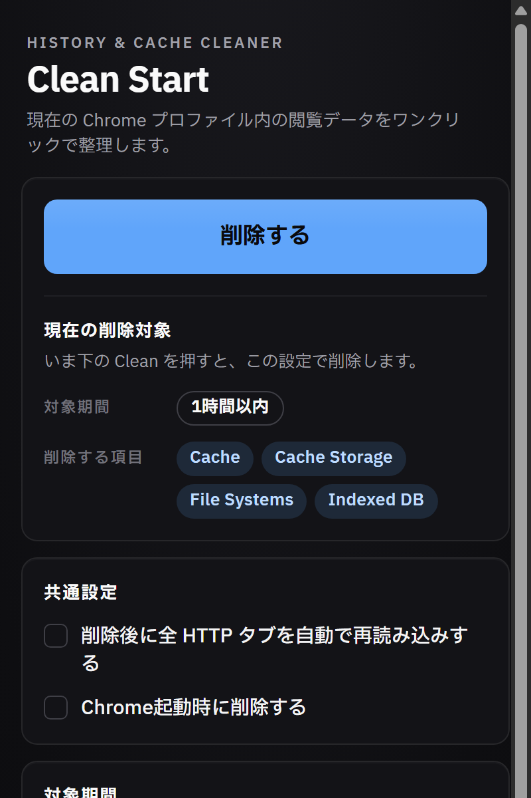

誤操作を前提に設計
セッションを吹き飛ばす事故を、2 回タップ確認で構造的に防ぎます。
Browsing data cleanerChrome / MV3
履歴・キャッシュ・Cookie など 12 種類のデータを、期間を選んでまとめて削除。ボタンは 2 回タップで初めて実行されるので、うっかり全消しを防げます。

DESIGN INTENT
Clean Start の基本仕様
Chrome の設定画面を何階層もたどらずに、ポップアップだけで完結します。
12 種類のデータから、消したいものだけをチェックします。設定は次回も保持されます。
直近 1 時間から全期間まで、5 段階の削除範囲を選べます。
1 回目で確認状態に切り替わり、5 秒以内の 2 回目で実際の削除が走ります。
FEATURES
よく使う組み合わせを保存しておけば、ポップアップを開いて 2 タップするだけ。任意で自動クリアを有効にすることもできます。
対象と処理の一覧
| データ種別 | 状態 | 処理 |
|---|---|---|
| 履歴 | 選択中 | DELETE |
| キャッシュ | 選択中 | DELETE |
| Cookie | 選択中 | DELETE |
| パスワード | 対象外 | KEEP |
CONFIRM STATE
tap 1 → 「もう一度で確定」
5s window
5 秒を過ぎると自動で通常状態へ戻り、削除は実行されない
DESIGN PRINCIPLES
セッションを吹き飛ばす事故を、2 回タップ確認で構造的に防ぎます。
選択状態はローカルに保存され、外部へは送信されません。
設定画面をたどらず、開いてすぐ掃除できる導線にしています。
INSTALL
Chrome / Edge / Brave などの Chromium 系ブラウザに対応。日本語・英語の 2 言語対応。MIT License。